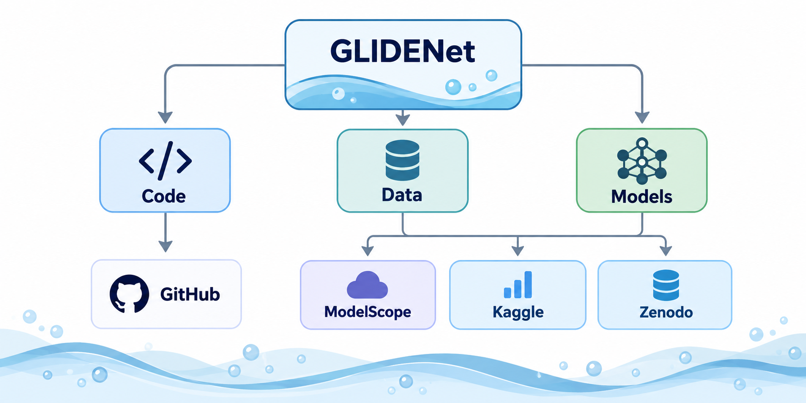
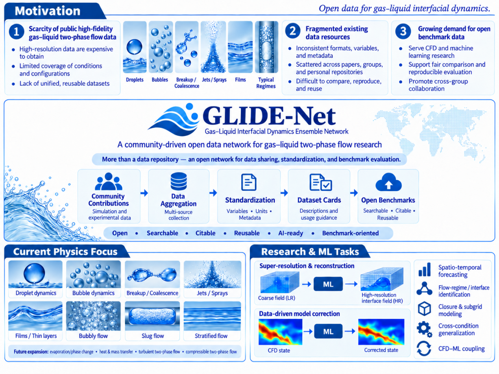

Benchmarks
GLIDENet benchmarks will define reusable tasks for gas-liquid interface dynamics, including train/test splits, baseline loaders, evaluation metrics, and related publications.

Summary
- Benchmark records will be selected from reviewed GLIDENet datasets.
- Candidate tasks include interface reconstruction, flow-field prediction, super-resolution, segmentation, surrogate modeling, and case-to-case generalization.
- Each benchmark should document split policy, leakage prevention, metrics, baseline expectations, and known limitations.

Keywords
Gas-liquid interface dynamics, CFD datasets, machine-learning benchmarks, metadata-driven reuse, external data hosting, and reproducible loaders.
Key Results
Results will be added after the first curated benchmark release. This space is reserved for comparison plots, baseline tables, and challenge leaderboards.
Related Publications
Related GLIDENet publications will be listed here after formal benchmark releases are available.